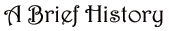
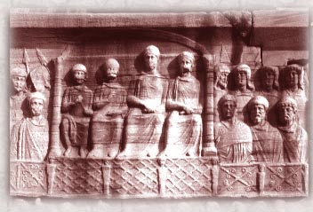
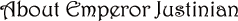

 The Hippodrome was built by the emperor Constantine I in the 330’s. For nearly 800 years, it has been the site of quadriga races, light entertainment, riots, massacres, triumphs, and executions.  SEF/Art Resource In 532, it was the site of the infamous Nika riots, when tens of thousands of dissidents shouting “Nika! Nika!” (“Victory! Victory!”) celebrated—prematurely—the abdication of the emperor Justinian. At the urging of his wife, Empress Theodora, Justinian sent General Belisarius and his troops into the stadium, where they slaughtered thousands and ended the revolt. Since then, the Hippodrome has been used mainly for official celebrations and ceremonies.  Justinian I was our emperor from A.D. 527 until his death in 565. He is famous for his law code, his buildings, and his conquests. In his eagerness to direct all affairs of the empire, Justinian displeased powerful factions who revolted in 532 and burned down the central part of the city. However, the emperor suppressed the revolt and out of the ashes of the ruins, he built the glorious Cathedral of Hagia Sophia. |